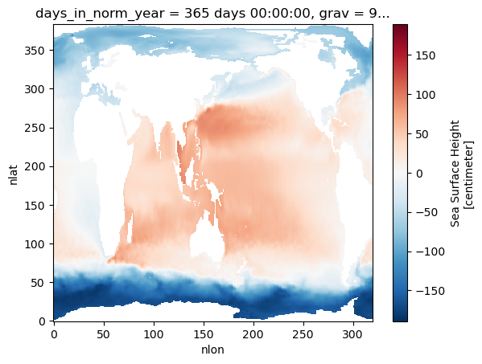

Sea Surface Height#
%load_ext autoreload
%autoreload 2
import os
import numpy as np
import xarray as xr
import pandas as pd
from glob import glob
import intake
import dask
from dask.distributed import Client
import matplotlib.pyplot as plt
import matplotlib.colors as colors
import cartopy
import cartopy.crs as ccrs
import nbscuid.util
Reading in parameters#
### this cell will get parametrized
path_to_cat = "placeholder"
subset_kwargs = {}
cluster_scheduler_address = None
### this is here so it can be run alone
#path_to_cat = "temp_data/ssh_cat_subset.json"
# Parameters
casename = "gcp-cases"
subset_kwargs = {"frequency": "month_1", "component": "ocn", "variable": "SSH"}
path_to_cat = "/glade/u/home/eromashkova/codes/nbscuid-examples/basic-demo/temp_data/gcp-cases_subset.json"
Connecting to cluster#
if cluster_scheduler_address is None:
cluster, client = nbscuid.util.get_ClusterClient()
cluster.scale(12)
else:
client = Client(cluster_scheduler_address)
client
/glade/work/eromashkova/miniconda3/envs/diag-sandbox/lib/python3.9/site-packages/distributed/node.py:183: UserWarning: Port 8787 is already in use.
Perhaps you already have a cluster running?
Hosting the HTTP server on port 37495 instead
warnings.warn(
Client
Client-c60d7a99-d9b8-11ed-b185-3cecef1b12de
| Connection method: Cluster object | Cluster type: dask_jobqueue.PBSCluster |
| Dashboard: https://jupyterhub.hpc.ucar.edu/stable/user/eromashkova/proxy/37495/status |
Cluster Info
PBSCluster
cbf917d6
| Dashboard: https://jupyterhub.hpc.ucar.edu/stable/user/eromashkova/proxy/37495/status | Workers: 0 |
| Total threads: 0 | Total memory: 0 B |
Scheduler Info
Scheduler
Scheduler-ebc162e9-8041-4156-8495-b0bb83f96afb
| Comm: tcp://10.12.206.48:35907 | Workers: 0 |
| Dashboard: https://jupyterhub.hpc.ucar.edu/stable/user/eromashkova/proxy/37495/status | Total threads: 0 |
| Started: Just now | Total memory: 0 B |
Workers
Reading in data with subsetting#
dset_dict = (intake.open_esm_datastore(path_to_cat).search(**subset_kwargs)).to_dataset_dict()
--> The keys in the returned dictionary of datasets are constructed as follows:
'component.stream.case'
100.00% [1/1 00:49<00:00]
Plotting data#
for i in dset_dict.keys():
ds = dset_dict[i].isel(time=0)
fig = plt.figure()
ds.SSH.plot()
